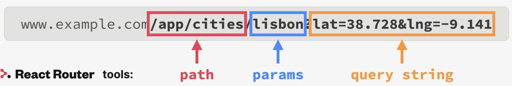

Storing state in the URL
The URL is an excellent place to store UI state and an alternative to
useStatein some situationsExamples: open/close panels, currently selected item, list sorting order, applied filter lists
easy to way to store state in a global place, accessible to all components in the app
good way to “pass” data from one page into the next page
makes it possible to bookmark and share the page with the exact UI state it had at the time

URL state stored as params and query string
Using params
First, we define a Route using the city’s id as params:
function App() {
{*/ other stuff */}
return (
{*/ other stuff */}
<Routes>
<Route index element={<Homepage />} />
<Route path="product" element={<Product />} />
<Route path="pricing" element={<Pricing />} />
<Route path="login" element={<Login />} />
<Route path="*" element={<PageNotFound />} />
<Route path="app" element={<AppLayout />}>
<Route
index
element={<CityList cities={cities} isLoading={isLoading} />}
/>
<Route path="cities/:id" element={<City />} />
<Route
path="cities"
element={<CityList cities={cities} isLoading={isLoading} />}
/>
<Route
path="countries"
element={<CountryList cities={cities} isLoading={isLoading} />}
/>
<Route path="form" element={<p>Form</p>} />
</Route>
</Routes>
);
}
which defines a route to /cities/<some_id> to return a City element. Any part of
the URL starting with : will be a dynamic segment.
Next, we make each CityItem to return a Link to the new URL:
function CityItem({ city }) {
const { cityName, emoji, date, id } = city;
return (
<li>
<Link className={styles.cityItem} to={`${id}`}>
<span className={styles.emoji}>{emoji}</span>
<h3 className={styles.name}>{cityName}</h3>
<time className={styles.date}>{formatDate(date)}</time>
<button className={styles.deleteBtn}>×</button>
</Link>
</li>
);
}
Inside the <City> component, we can access the passed parameters using the
useParams hook (provided by react-router-dom):
function City() {
const { id } = useParams();
{/* other stuff */}
return <h1>City {id}</h1>;
}
We can destructure the id and use it inside the component.
Using query strings
Same as the params, it is added to the URL:
function CityItem({ city }) {
const { cityName, emoji, date, id, position } = city;
console.log(position);
return (
<li>
<Link
className={styles.cityItem}
to={`${id}?lat=${position.lat}&lng=${position.lng}`}
>
<span className={styles.emoji}>{emoji}</span>
<h3 className={styles.name}>{cityName}</h3>
<time className={styles.date}>{formatDate(date)}</time>
<button className={styles.deleteBtn}>×</button>
</Link>
</li>
);
}
We will access the lat and lng value inside the <Map> component using
the useSearchParams() hook. To get the query string value, we must call the
get() method:
import { useSearchParams } from "react-router-dom";
import styles from "./Map.module.css";
function Map() {
const [searchParams, setSearchParams] = useSearchParams();
const lat = searchParams.get("lat");
const lng = searchParams.get("lng");
return (
<div className={styles.mapContainer}>
<h1>Map</h1>
<h1>
Position: {lat}, {lng}
</h1>
</div>
);
}
The data can also be used by any other component, which is rendered at this URL,
here inside the <City> component:
function City() {
const { id } = useParams();
const [searchParams, setSearchParams] = useSearchParams();
const lat = searchParams.get("lat");
const lng = searchParams.get("lng");
{/* more stuff */}
return (
<>
<h1>City {id}</h1>
<p>
Position {lat}, {lng}
</p>
</>
);
We can use the hook’s setSearchParams() function to change the query string
values for the application:
function Map() {
const [searchParams, setSearchParams] = useSearchParams();
const lat = searchParams.get("lat");
const lng = searchParams.get("lng");
return (
<div className={styles.mapContainer}>
<h1>Map</h1>
<h1>
Position: {lat}, {lng}
</h1>
<button
onClick={() => {
setSearchParams({ lat: 23, lng: 50 });
}}
>
Set Position
</button>
</div>
);
}